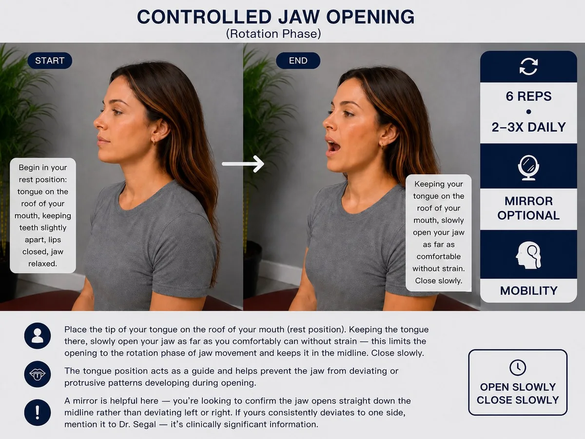
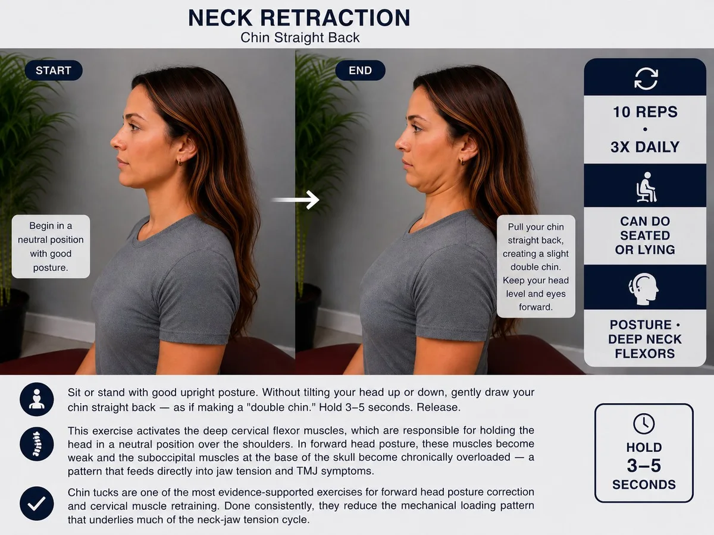

If you're living with TMJ disorder, you've probably searched for something you can do between appointments — something active, at home, that might help. That's a reasonable instinct, and the research supports it: therapeutic exercise is a recognized component of conservative TMJ care.
But the internet is full of "TMJ exercises" lists that range from helpful to potentially counterproductive, with no clinical context for who they're appropriate for, when to use them, or what they're actually doing. This article tries to do better than that.
What follows is a clinically grounded overview of the types of exercises most supported by evidence for TMJ disorder — including not just jaw exercises, but the neck and posture work that a chiropractic approach recognizes as equally important. These are supportive strategies intended to complement professional care, not replace it.
Important: TMJ disorder varies significantly between individuals. Exercises appropriate for one presentation may not be appropriate for another — and some may make certain conditions temporarily worse before they get better. If you're unsure where to start, ask Dr. Segal at your visit for guidance specific to your situation.
What the Research Says About TMJ Exercise
A 2023 systematic review published in Frontiers in Oral Health examined randomized controlled trials on exercise therapy for pain-related TMD. The review found that exercise therapy — including stretching, coordination, and resistance exercises — can reduce pain intensity and improve jaw mobility in people with TMD myalgia and arthralgia compared to no treatment or education alone.
A 2025 systematic review in PMC further found that therapeutic exercise produces meaningful improvements in activity, participation, and quality of life for people with TMD — with both jaw-specific exercises and broader postural and cervical exercises contributing to outcomes.
One consistent finding across studies: exercises that address the cervical spine alongside the jaw tend to produce better outcomes than jaw-only approaches. This aligns with the chiropractic understanding of TMJ disorder as a condition of the whole upper quarter — jaw, neck, posture, and the muscles connecting them.
Jaw-Specific Exercises
These exercises work directly on jaw mobility, muscle relaxation, and neuromuscular control. They are most appropriate when jaw range of motion is limited or when muscle tension is a primary driver of symptoms. Start gently. If an exercise produces sharp pain or significantly worsens symptoms after a session, stop and discuss it with Dr. Segal.
1. Resting Jaw Position Awareness
This is less an exercise than a habit — but it's foundational. The correct resting position of the jaw is: tongue resting gently on the roof of the mouth just behind the upper front teeth, lips lightly closed, teeth slightly apart (not touching). Many people with TMJ disorder default to a clenched or braced jaw position throughout the day without realizing it.
Check in on your jaw position several times a day — especially during concentration, driving, or screen time. When you notice tension, consciously release it into the correct rest position. Over time this reduces the cumulative daily muscle load that feeds into both daytime pain and overnight grinding.
2. Controlled Jaw Opening (Rotation Phase)
Place the tip of your tongue on the roof of your mouth (rest position). Keeping the tongue there, slowly open your jaw as far as you comfortably can without strain — this limits the opening to the rotation phase of jaw movement and keeps it in the midline. Close slowly. The tongue position acts as a guide and helps prevent the jaw from deviating or protrusive patterns developing during opening.
A mirror is helpful here — you're looking to confirm the jaw opens straight down the midline rather than deviating left or right. If yours consistently deviates to one side, mention it to Dr. Segal — it's clinically significant information.

3. Gentle Side-to-Side Jaw Movement
With the jaw in the rest position, slowly move it to the right as far as comfortable without pain. Hold briefly. Return to center. Repeat to the left. This exercises the lateral pterygoid muscles and the translational component of jaw movement — the motion that allows side-to-side chewing. Restricted lateral excursion is common in TMJ disorder and responds well to gentle, consistent movement.
Keep the movement slow and controlled. This is not a stretch — force is not the goal. Comfortable range explored gently is what you're after.
4. Rhythmic Jaw Stabilization (Isometrics)
This exercise promotes relaxation through reciprocal inhibition and improves neuromuscular control of the jaw — the ability of the muscles to work in coordinated patterns rather than braced, guarded patterns.
Place your hand lightly under your chin. Gently try to open your jaw while your hand provides just enough resistance to prevent actual movement — a very light isometric contraction. Hold 2–3 seconds. Release fully. Repeat with light resistance against closing, then against side movement left and right. The key word throughout is gentle — this is not about generating maximum force.
Neck and Posture Exercises That Help the Jaw
This is where a chiropractic approach to TMJ self-care differs from what most dental-focused resources recommend. The neck and jaw share nerve pathways, muscle attachments, and mechanical load — which means cervical spine mobility and posture directly affect jaw function. Multiple randomized controlled trials have shown that adding cervical spine exercises to jaw treatment produces better outcomes than jaw treatment alone.
5. Chin Tucks (Cervical Retraction)
Sit or stand with good upright posture. Without tilting your head up or down, gently draw your chin straight back — as if making a "double chin." Hold 3–5 seconds. Release. This exercise activates the deep cervical flexor muscles, which are responsible for holding the head in a neutral position over the shoulders. In forward head posture, these muscles become weak and the suboccipital muscles at the base of the skull become chronically overloaded — a pattern that feeds directly into jaw tension and TMJ symptoms.
Chin tucks are one of the most evidence-supported exercises for forward head posture correction and cervical muscle retraining. Done consistently, they reduce the mechanical loading pattern that underlies much of the neck-jaw tension cycle.

6. Gentle Neck Rotation
Sit upright. Slowly rotate your head to look over your right shoulder as far as comfortable without strain. Hold 2–3 seconds. Return to center. Repeat to the left. Research has found that when cervical range of motion is limited, the jaw and surrounding muscles compensate — adding to the overall mechanical load on the TMJ system. Restoring comfortable neck rotation is a direct support for jaw function.
Do not force range. If rotation is significantly asymmetric or painful, that's important clinical information for your evaluation at Oregon TMJ.
7. Lateral Neck Stretch
Sit upright with your right hand resting at your side or held gently behind you. Slowly tilt your left ear toward your left shoulder until you feel a comfortable stretch along the right side of your neck. Hold 20–30 seconds. Repeat on the other side.
The upper trapezius and levator scapulae muscles — the ones that run from the neck down to the shoulder — are among the most commonly hypertonic muscles in TMJ patients. Chronic tension in these muscles transmits upward into the cervical spine and jaw system. Regular stretching reduces this baseline tension load.
8. Shoulder Blade Retraction
Sit or stand upright. Gently squeeze your shoulder blades together and slightly downward — as if trying to hold a pencil between them. Hold 3–5 seconds. Release. This exercise activates the mid-trapezius and rhomboid muscles that support an upright thoracic posture. Rounded shoulders and a collapsed upper back are part of the same postural pattern as forward head posture — and they're interconnected. Improving thoracic posture takes load off the cervical spine, which takes load off the jaw.
How to Use These Exercises Safely
A few principles that apply across all of the above:
- Gentle is more effective than forceful. TMJ disorder involves inflamed, sensitized tissue. Aggressive stretching or forcing range of motion can provoke a flare. Consistent, gentle movement over time produces better results than pushing hard
- Consistency matters more than volume. Six gentle reps done twice a day is more valuable than twenty reps done once. Building these into existing daily routines — morning routine, lunch break, before bed — is more sustainable than treating them as a separate workout
- Some temporary muscle soreness is normal. Starting new exercises engages muscles that have been either overworked or underused. Mild muscle soreness after a session is generally not a concern. Sharp joint pain, significant worsening of symptoms, or new symptoms warrant stopping and discussing with Dr. Segal
- These exercises support treatment — they don't replace it. Home exercises work best when the underlying joint dysfunction, disc position, and cervical spine mechanics are being addressed professionally at the same time. Exercise maintains and extends the work done in treatment; it can't substitute for it
Key Takeaway
TMJ self-care exercises are most effective when they address both the jaw and the neck — because both are part of the same system. Gentle, consistent movement to improve jaw mobility, reduce muscle tension, and support cervical posture can meaningfully complement professional treatment. The goal is to support recovery between visits, not to manage TMJ disorder independently at home.
Ready to Address the Whole Picture?
Home exercises support recovery. Professional care at Oregon TMJ addresses the joint mechanics, disc position, cervical spine, and muscle function that drive your symptoms — serving Oregon City, Portland, Milwaukie, and the greater Portland metro.
Book an Appointment Request InformationFrequently Asked Questions
How often should I do TMJ exercises?
Consistency matters more than volume. Most of the exercises above are designed for 2–3 short sessions per day — 6–10 repetitions per exercise, taking just a few minutes. Building them into existing routines (morning, lunch break, before bed) is more effective than trying to do a long session once a day. Gentle and consistent always outperforms aggressive and sporadic for TMJ.
Can exercises fix my TMJ without professional treatment?
Home exercises can reduce muscle tension, support jaw mobility, and help maintain progress between visits — but they can't reposition a displaced disc, restore cervical spine mechanics, or address the structural dysfunction that underlies most TMJ disorder. Think of them as maintenance and support, not a standalone cure. They work best alongside professional care, not instead of it.
Are there exercises I should avoid with TMJ?
Avoid anything that causes sharp joint pain or significantly worsens symptoms. Wide aggressive stretching — forcing the jaw open to maximum range — can provoke a flare in inflamed tissue. Chewing gum, hard foods, and prolonged chewing on one side are lifestyle habits worth avoiding. If you have significant disc displacement or locking, check with Dr. Segal before starting exercises — some movements are better avoided until the joint is more stable.
Why are neck exercises included in a TMJ exercise guide?
Because the jaw and neck are part of the same mechanical system. Research consistently shows that adding cervical spine exercises to jaw treatment produces better outcomes than jaw exercises alone. Forward head posture and cervical dysfunction directly load the TMJ and drive jaw muscle tension. Addressing the neck is not optional — it's essential to a complete approach.
Related Articles
- Your Neck Is Causing Your Jaw Pain — The TMJ-Cervical Spine Connection — Why cervical spine function is inseparable from jaw health
- Teeth Grinding and TMJ — Breaking the Cycle of Bruxism — Daytime habits and awareness strategies to reduce clenching
- TMJ and Sleep — How Jaw Problems Affect Your Rest — Sleep position and pillow tips to reduce overnight jaw strain
References
- Häggman-Henrikson B, et al. "Effectiveness of exercise therapy on pain relief and jaw mobility in patients with pain-related temporomandibular disorders: a systematic review." Frontiers in Oral Health. 2023;4:1170966. https://doi.org/10.3389/froh.2023.1170966
- Armijo-Olivo S, et al. "Effectiveness of manual therapy and therapeutic exercise for temporomandibular disorders." Physical Therapy. 2016;96(1):9–25. https://doi.org/10.2522/ptj.20140548
- Calixtre LB, et al. "Manual therapy for the management of pain and limited range of motion in subjects with signs and symptoms of temporomandibular disorder." Journal of Oral Rehabilitation. 2015;42(11):847–861. https://doi.org/10.1111/joor.12321
- Therapeutic Exercise Effects on Activity, Participation and Quality of Life in Individuals With Temporomandibular Disorders: A Systematic Review. PMC. 2025. https://pmc.ncbi.nlm.nih.gov/articles/PMC12426462/
- Grondin F, et al. "Effect of manual therapy and therapeutic exercise applied to the cervical region on pain, range of motion, and disability in patients with temporomandibular disorders." Journal of Oral Rehabilitation. 2015;42(11):847–861.
- National Institute of Dental and Craniofacial Research. "TMJ Disorders." https://www.nidcr.nih.gov/health-info/tmj